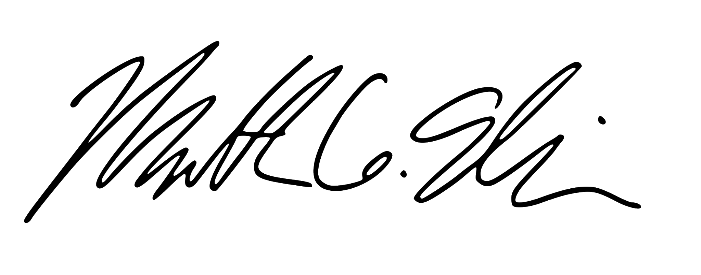

Dear brothers and sisters; family, friends:
Deo gratias! Thanks be to God! It is with great joy that I write to share the good news of my vocation and to ask for your prayers and support.
After graduating from Georgetown in 2018 and a few fruitful years of work in international affairs, research, and publishing—and much prayer, contemplation, and reflection—I have heard a call to enter the seminary and begin training for the priesthood. This was not a decision reached lightly, but I have grown ever more confident and at peace with a strong sense that no matter what lies ahead, God is calling me to take this next step towards a life of greater service to Him and His Church.
This fall, I have begun as a postulant with the Institute of Christ the King, which is an international institute of apostolic life of pontifical rite—meaning it is under the direct authority of the Holy See in Rome—whose reason for being is the honor of God and the sanctification of priests in the service of the Church and souls.
The Institute is a special community and I hope it will become my new priestly home. The Institute’s priests are secular canons, which one can think of as part-way between “religious” monks and “ordinary” parish priests, due to their particular charism and function within the Church. God willing, I will ultimately become a Canon some years from now.
In discerning my vocation, I was especially drawn to the Institute’s charism: great care for a solemn liturgy, complete fidelity to the doctrine of the Church and the Holy Father, and awareness of the central role of grace, especially charity, under the co-patronage of St. Benedict, St. Thomas Aquinas, and St. Francis de Salles.
My priestly formation is set to take place in Europe, and I plan to spend the next year in England before, God-willing, moving to the Institute’s main seminary at its headquarters in Italy. Among my studies of theology, philosophy, and other aspects of priestly and religious life, I will also focus on learning languages especially French and Italian, in addition to improving my Latin, which will be necessary for my vocation.
Of your charity, I would be grateful for any prayers and support you might be able to offer me in this time of new beginnings for my priestly vocation.
With the help of some friends, we have founded a new private association, the Society of Saint Matthew the Apostle, which is both a prayer society and a non-profit public charity dedicated to the intercession of Saint Matthew and the aid of churches, clergy, and efforts to advance Christian faith and culture.
My personal motto, which I share with this new little society, is Matthew 6:33, “Seek ye therefore first the kingdom of God, and his justice, and all these things shall be added unto you.” These words of sacred scripture were crucial to me in my discernment of a vocation to become a priestly apostle of Christ—and the Society invites all to contemplate these words in their daily life.
We would be grateful if you would be willing to join our society as a lay associate. The only requirement to join the Society is that you pray for the society, for its intentions, and for the other people praying for the society. Christian tradition teaches that there are special graces that flow to those who offer support, whether spiritual or material, to seminarians: in this way, we can multiply the “economy” of prayer and the flow of grace! Be assured, in any event, of my prayers for you!
Please email contact@apostlematthew.org, if you wish to join, so we can keep you informed of news from me and the society.
Friends and family continue to ask me how they can help me and my vocation—for which I’m most grateful. Of course, prayers are truly the most important way you can support me.
In the interest of my “daily bread” however—and moreover, daily books, clothes, and modest room and board, etc.—I could use donations of whatever your means permit!
I expect my out-of-pocket expenses for the next year to be about $20,000, so whatever you can offer towards this goal is much appreciated. I am grateful to receive donations directly, or tax-deductible donations can be made to the Society which is a 501(c)(3) public charity. Please write to me at mattgellison@gmail.com or to the Society at contact@apostlematthew.org with any questions.
“Take my yoke upon you and learn from me, for I am gentle and humble in heart, and you will find rest for your souls. For my yoke is easy and my burden is light.” (Matthew 11:29-30)
With tremendous gratitude for your consideration and support, and ever faithfully yours,

Matthew G. Ellison